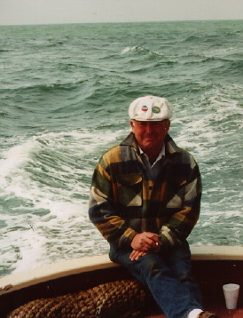
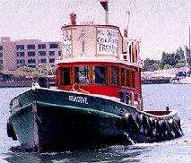

Dan Wilson
 Dan Wilson died at age 65, of cancer, on June 5th. Born on May 1st, he was destined for the radical shit-disturbing life he led. Dan grew up in Sausalito and Alameda, was a lifelong member of the Encinal Yacht Club. (member #96!) He was a champion racer of Folkboats, as well as other classes of yachts. He also was a big boat ocean sailor, competing in long-distance races such as the Tahiti race, many Hawaii races, and coastal races, on such famous boats as Windward Passage.
Dan did a stint in the Army, as well as college. He became an aircraft mechanic for Trans-Ocean in the wild early days of non-schedule fly-anywhere airlines. As a wrench, Dan had no equal, whether it was automobiles, airplanes, or giant marine engines. Dan was a master of boat work, repair, maintenance, whose standards and skills are not seen or met today.
As an employee for Oakland Dock and Warehouse, while still a young man, Dan learned that his future lay with the working class, and the power of the union. Coming in off the street, he finally achieved "B-man" status in the International Longshoremen's and Warehousemans Union (ILWU) in the late sixties, while still under the legendary Harry Bridges.
Dan distinguished himself, and created his own legend as a Union Steward and gang leader by fearlessly facing employers' reps and shutting down jobs instantly, whenever he felt that the men should take a moment to "think about whether to stop working." Dan was extremely proud to be a longshoreman, and knew his trade like few others. He had no patience with labor fakers or political opportunists, but also never hesitated to tell a ship agent to "go piss up a rope."
Dan realized another opportunity to combine his twin passions, the sea and the union, when he bought the 1916 tug Sea Dive. The boat, with a history as varied and strong as Dan's, was at one time a tow boat in the fishing industry, a line boat assisting Standard Oil tankers in coastal ports, and under Dan's command, a handy workboat and eternal thorn in the side of the Pacific Maritime Association or any scab-friendly employer in San Francisco bay.
The first action I participated in with Dan was the shutdown of the POSCO steel finishing plant in Pittsburg, California. We, and a flotilla of other boats, met the 700' Pacific Success at New York Point, near Pittsburg, and would not allow docking tugs to get alongside, forcing the Pilot to turn the ship at Antioch, and sail back down the bay to Anchorage 9, off Hunter's Point. We spent the next 10 nights circling the ship, 6pm to 6am, preventing any launch or pilot boat to come alongside. We amused ourselves during the long nights by sneaking up on seagulls and hooting at them with Sea Dive's steam whistle, or firewalling the engine and sending clouds of black smoke up across the bridge of the ship, alarming the watch on deck. Ultimately, the courts usurped the power of the workers, and the picket was called off, the battle transferred to the limbo of the "legal" system. But our work earned us an indictment under the RICO act, which although never brought to trial, we took as a badge of honor.
Dan joined the IWW in 1991, X341849, and we fought for and were granted a Union Shop card for the tug sometime later. Even though the records of Dan's dues-paying history are short, he believed that the proof of membership is in action -- not words, and considered himself a Wobbly for the rest of his life. We participated in many other actions, at all hours of the night or day, and Dan never refused to respond to a call for help or solidarity, regardless of the organization or details of the situation. Dan's philosophy was truly, "an injury to one is an injury to all," and to strike first, ask questions later.
As a man, Dan held to the same philosophy, and was a mentor, benefactor, and source of wisdom to myself, and many many others. He knew no distinctions of class or social status, and was unimpressed by wealth, position, or posturing attitude. He judged a person on the basis of his or her potential and actions, and many from all walks of life loved and respected him.
Dan worked hard and partied hard, and did things in the way that others only imagine. His motto, "LIFE IS EARNEST" is too small an epitaph for a man who lived as he did, and died bravely in the face of lung cancer, at home, with wife Jacque, and friends around him.
In sad solidarity,
Colin x340152.